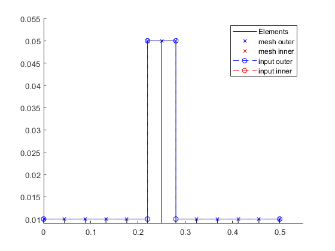

Contents
Clean up
close all
clear all
Import
import AMrotorSIM.*
Janitor = AMrotorTools.PlotJanitor();
Janitor.setLayout(2,3);
Created PlotJanitor....
Compute Rotor
Config_Sim_Time
r=Rotorsystem(cnfg,'Laval-Rotor');
r.assemble;
r.show;
r.rotor.show_2D();
r.rotor.assemble_fem;
No Options for Meshing...!
FeModel has no properties
--------------- Rotorsystem ------------------
Laval-Rotor
Einfaches Beispiel: Laval-Rotor
----------------------------------------------
--------------- Components -------------------
Axiales Lager Links
Torque Lager Links
Isotropes Lager 1
Isotropes Lager 2
----------------------------------------------
--------------- Sensors ----------------------
WegScheibeMitte
WinkelScheibeMitte
WinkelGeschwScheibeMitte
GeschwindigkeitScheibeMitte
BeschleunigungScheibeMitte
KraftScheibeMitte
----------------------------------------------
--------------- Loads ------------------------
Kleine Unwucht
----------------------------------------------
--------------- PID Controllers --------------
----------------------------------------------

Running Time Simulation
St_Lsg = Experiments.Stationaere_Lsg( r , [1000,1200] , (0:0.001:0.02) );
St_Lsg.compute_newmark
odeFcn init -> t = 0020 ms -> done
max local error = 0.054434
max global error = 1.0728
Elapsed time is 2.449158 seconds.
odeFcn init -> t = 0020 ms -> done
max local error = 0.078389
max global error = 1.5448
Elapsed time is 3.080416 seconds.
Plot results
Lsg = St_Lsg;
d = Dataoutput.TimeDataOutput(Lsg);
dataset_modalanalysis = d.compose_data();
d.save_data(dataset_modalanalysis,'Hochlauf_Laval_U_x_sweep0_200Hz_3000rpm');
dataset_modalanalysis = d.compose_data_sensor_wise();
struct = d.convert_data_to_struct_sensor_wise(dataset_modalanalysis);
d.save_data(struct,'Hochlauf_Laval_U_x_sweep0_200Hz_3000rpm');
t = Graphs.TimeSignal(r, Lsg);
o = Graphs.Orbitdarstellung(r, Lsg);
f = Graphs.Fourierdarstellung(r, Lsg);
fo = Graphs.Fourierorbitdarstellung(r, Lsg);
w = Graphs.Waterfalldiagramm(r, Lsg);
w2 = Graphs.WaterfalldiagrammTwoSided(r, Lsg);
for sensor = r.sensors
t.plot(sensor,[1,2,3]);
o.plot(sensor);
f.plot(sensor);
fo.plot(sensor,1);
fo.plot(sensor,2);
w.plot(sensor);
w2.plot(sensor);
Janitor.cleanFigures();
end